TOM and Jerry: Vision-Guided Robotic Tracking and Grasping
Names are listed in no particular order; all members contributed equally.
Stanford CS225A: Experimental Robotics · Spring 2026
- Why chase a mouse?
- Simulate first
- Pixels to world frame
- One controller
- Six-state machine
- Demo video
- What’s next
- Team
Catching a moving target is hard when the camera moves with the arm — every robot motion changes what the robot sees.
The key idea? Keep the layers separate: perception publishes world-frame keypoints, a 100 Hz state machine turns them into Cartesian references, and a single operational-space controller tracks those references smoothly.

Why chase a mouse?
What does it take for a robot to catch something that keeps moving?
Most manipulation assumes the object sits still; real targets don’t. A human-driven remote-controlled mouse can stop, dart, or reverse at any moment, forcing the robot to re-perceive and react in real time — the same skills behind dynamic pick-and-place and human–robot handover.
Simulate before touching the robot
How do we develop the controller before the vision stack is ready?
The simulation in OpenSai/SAI reproduces the real workcell: the Rizon4S fixed at the origin next to a 1.0 × 1.3 m tabletop. The mouse is a small red box whose pose follows a bounded random walk, moving for 2 s and pausing for 5 s so the arm has time to converge overhead and attempt a grasp — just like the intermittent motion of the real RC toy. An eye-in-hand camera sits on link 7 with the same extrinsic offset as the physical D405 mount, and physics runs at 2 kHz.
To decouple from the perception team, the simulation publishes a “fake CV” signal over the same Redis keys as the real pipeline: the ground-truth target position with 5 mm noise and a field-of-view check. The state machine and controller were exercised end-to-end before any hardware was involved.
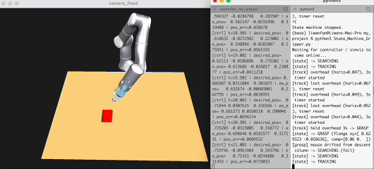
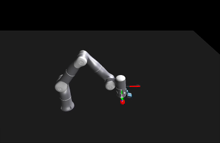
From pixels to the world frame
Where is the mouse, when the camera itself is moving?
Each 640 × 480 color frame goes through YOLOv11-pose; only the highest-confidence detection above threshold is kept. Instead of trusting a single depth pixel, we take the median valid depth in a small neighborhood around each keypoint, then deproject it with the camera intrinsics.
Because the camera rides on the end effector, every point is re-expressed in the world frame each cycle using the fixed camera mount and the live link-7 pose:
Worldp = TWorldlink7 · Tlink7Cam · Camp
The pipeline publishes the mouse center, tail base, center-to-tail vector, and detection confidence — all in one consistent world frame.
One controller, many references
How does the arm move smoothly toward a target that keeps jumping?
A single operational-space controller runs as its own process. The state machine never reconfigures it — it only updates the pose reference. Position and orientation form one 6-DoF task on a control point 0.15 m down the tool axis:
F = Λ(q)[−Kp(x − xref) − Kvẋ], Λ(q) = (J M−1J⊤)−1
Λ decouples the task dynamics, so the same gains behave the same in every arm configuration. With 7 joints against a 6-DoF task, the redundant DoF is handled by a joint-space PD task projected into the null space, pulling the arm toward its start-up posture without disturbing the end effector:
Γ = J⊤F + N⊤Γjoint + g(q), N = I − J⊤J̄⊤
Every goal passes through online trajectory generation that caps velocity and acceleration, so state transitions and noisy perception updates never become jerky motions. The velocity cap is lowered during the final grasp descent for a slow, safe approach.
A six-state machine
How do search, track, and grasp fit together?
A 100 Hz finite-state machine sits between perception and control, translating keypoints into the references the controller tracks.
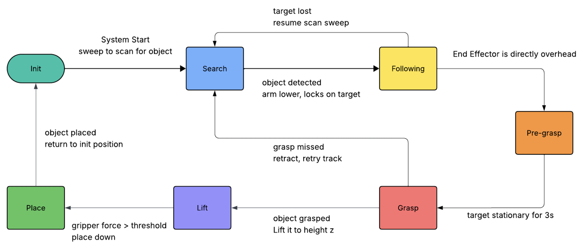
| State | Desired position | Orientation | Gripper |
|---|---|---|---|
| Search | Sweep between two endpoints at 65 cm | Locked downward at endpoints | Open |
| Track | Target center + 30 cm hover (EMA-filtered) | Look-at, camera x-axis kept continuous | Open |
| Pre-grasp | Tail-base xy at hover height | Locked downward | Open |
| Grasp | Frozen tail-base xy, descend to grasp height | Yawed ⊥ to mouse body axis | Close at 60 N |
| Lift | Current xy, z + 25 cm | Hold grasp orientation | Hold |
| Place | [0.75, −0.45] m, then descend to 8 cm | Hold grasp orientation | Open at target |
A few guards make it robust: tracking only starts when the target is inside the central 80% of the image; pre-grasp waits until the mouse stays within 10 cm of an anchor for 2.0 s; and the grasp yaw comes from the filtered center-to-tail vector so the jaws close across the body.
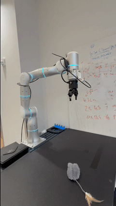
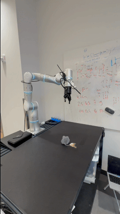
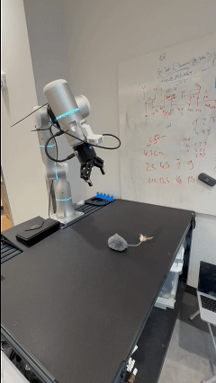
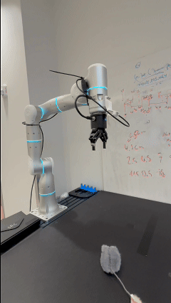
Why only the central 80% of the frame?
The mouse often first appears at the edges of the camera view, where its depth estimate is least reliable and following it would demand an abrupt re-orientation. If any detection could trigger tracking, the arm would lunge toward the edge, lose the mouse as it slipped out of view, fall back to searching, and spot it again moments later — flipping between searching, tracking, and pre-grasp so quickly that it jitters in place and never settles long enough to make a catch.
Requiring the keypoint to sit inside the central 80% of the image before tracking begins removes that chatter: the robot only commits once the target is well in view, and then keeps it centered.
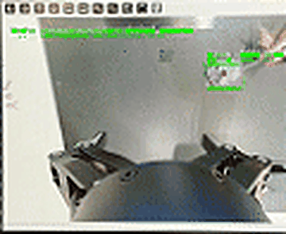
Why grasp the tail, not the body?
Our first grasps aimed at the mouse’s body. It is a rounded shell covered in soft fur: the jaws sink into the fur, there is no edge for the fingers to close on, and the toy squeezes out of the gripper as soon as it lifts. The tail base is a firm, narrow feature the jaws can close around securely, so PRE-GRASP retargets from the center keypoint to the tail-base keypoint before descending.
The switch came with two adjustments. The tail-base keypoint is noisier than the center, so it is filtered more heavily (EMA α = 0.1). And because the tail is too thin for a gripper-width check, LIFT judges success by grip force instead: above 2.5 N means the mouse is held; below it, the gripper reopens and the robot goes back to searching.
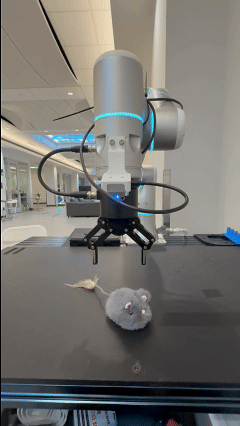
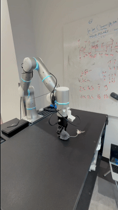
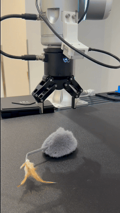
Demo video
The full system, end to end.
What’s next
How could the system anticipate instead of react?
- Predictive tracking (e.g. Kalman filtering) to reduce lag during fast target motion.
- Adaptive grasping: estimate the full object pose and generate grasp candidates, instead of a fixed tail-base point.
- Generalization: train on multiple object categories to turn the system into a general dynamic pick-and-sort platform.
Team
Names are listed in no particular order; all members contributed equally.
We thank Enzo Andreacchio and William Chong for their support debugging hardware issues, and instructors Oussama Khatib and Xiyang Yeh for their teaching and guidance.